- 一무엇을 미덧나
흰 것 하나로 천하를 희게 한다는 말. 그 말 아래, 사람들은 재산과 식구를 내노앗소.
- 二무엇을 숨겻나
처음에는 교조의 죽음을 숨겻소. 그 뒤로는 — 사람을 숨겻소.
- 三무엇이 남앗나
스무 곳 남짓한 땅, 셀 때마다 달라지는 수, 그리고 — 병 하나.
출처 · 조선일보 1937년 4월 13일 호외 · 동아일보 1937년 6월 3일(속간) · 6월 9일 · 9월 23일 · 10월 17일 · 11월 17일 · 12월 11일자 · 한국민족문화대백과사전 · 위키백과 「백백교」
서장 · 흰 옷
한 사람의 흰 것으로
천하를 희게 하자
백백교가 내건 말이오.
- 그 시절, 조선 사람은 누구나 흰 옷을 입엇소.
- 그래서 — 누가 신도인지, 겉으로는 아모도 몰랏소.
- 교주는 말하엿소. 곳 물과 불로 심판하는 날이 온다. 살 곳은 전국 쉰세 곳의 피난처뿐이다.
- 그 피난처로 가려면 — 가진 것을 바쳐야 하엿소.
신도들이 외든 주문
백백백 의의의 적적적 감응감감응 하시옵숭성
펼쳐 노은 흰 옷 · 재현 그림
근거 · 위키백과 「백백교」 (교리 · 물과 불의 심판 · 53곳 피난처 · 주문)
그 말을 내건 사람을, 신도들은 「대원님」이라 불럿소.
대원님, 전용해
백백교의 교주. 신이 되려 한 사람 — 이 지면의 모든 장은 그에게서 나왓소.
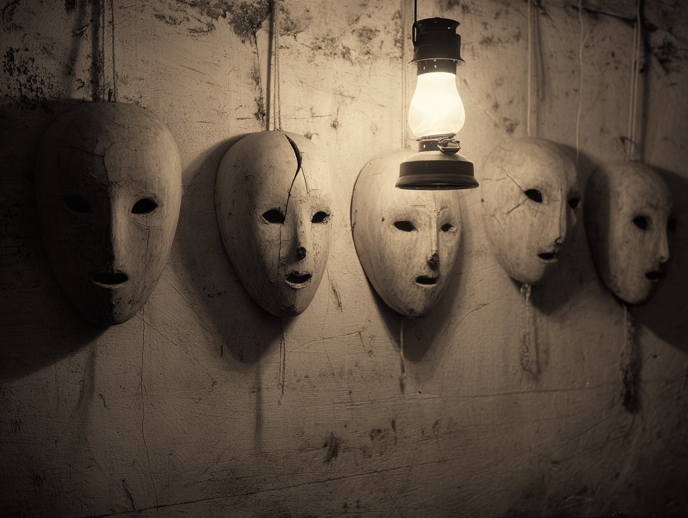
얼굴 대신 — 가면- 일홈
- 전용해 — 백백교 교주
- 불린 일홈
- 대원님
- 스스로 이른 것
- 하느님의 아들. 하늘의 자리에 오를 사람.
- 아버지
- 전정운 — 백도교를 연 교조
- 형제
- 형 전용주는 인천도를, 아우 전용석은 도화교를 세웟소.
- 가명
- 김두선 등 열여섯
- 얼굴
- 사진을 남기려 하지 아넛고, 가면을 여럿 쓰고 다녓다 하오.
수배
- 그는 교조 전정운의 둘째 아들이엇소. 한 아버지 아래에서 — 세 아들이 저마다 교단을 세웟소.
- 그는 독립을 자기가 이끈다 하엿소. 그날이 오면 — 바친 만큼 벼슬을 내린다 하엿소.
- 신도의 재산으로 사치를 누렷소. 재산이 모자란 집에는 — 딸을 바치게 하엿소.
- 여신도들을 욕보이고, 그것을 「신의 행사」라 불럿소.
- 그리고 그는 — 얼굴을 숨겻소.
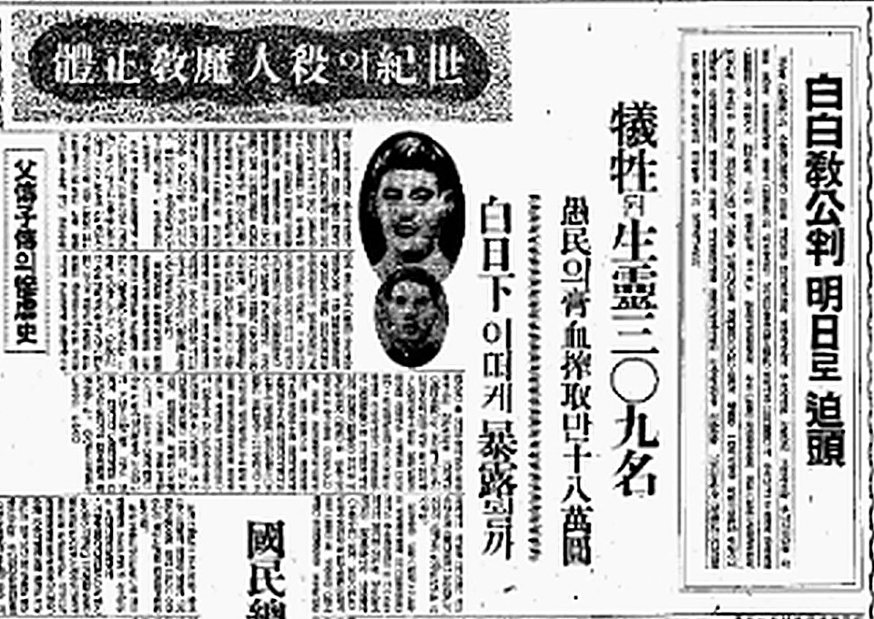
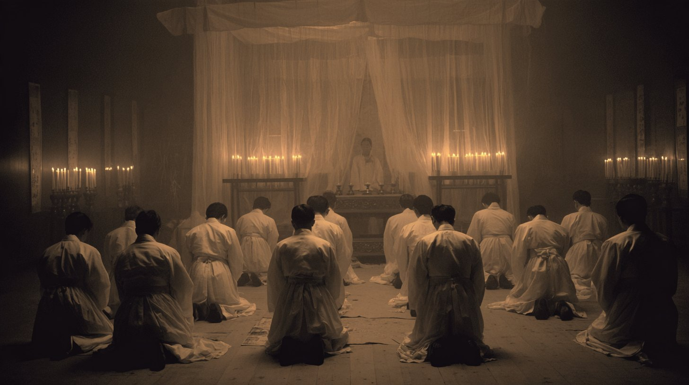
근거 · 위키백과 「백백교」 (전정운의 둘째 아들 · 형 전용주 인천도 · 동생 전용석 도화교 · 대원님 · 하느님의 아들 · 가명 16 · 사진을 남기지 않음 · 가면 · 사치 · 딸 헌납 · 「신의 행사」) · 한국민족문화대백과사전 「백백교」 · 동아일보 1940년 3월 「세기의 살인마교 정체」 (희생 309명 · 18만 원 · 부전자전의 참극사)
그의 이야기는 — 아버지의 죽음을 숨기는 데서 시작하엿소.
아버지의 죽음을 덮은 흰 종이
대정 팔 년, 한 교조가 죽엇소. 그러나 그 죽음을 알리는 종이는 — 끗내 돌지 아넛소.
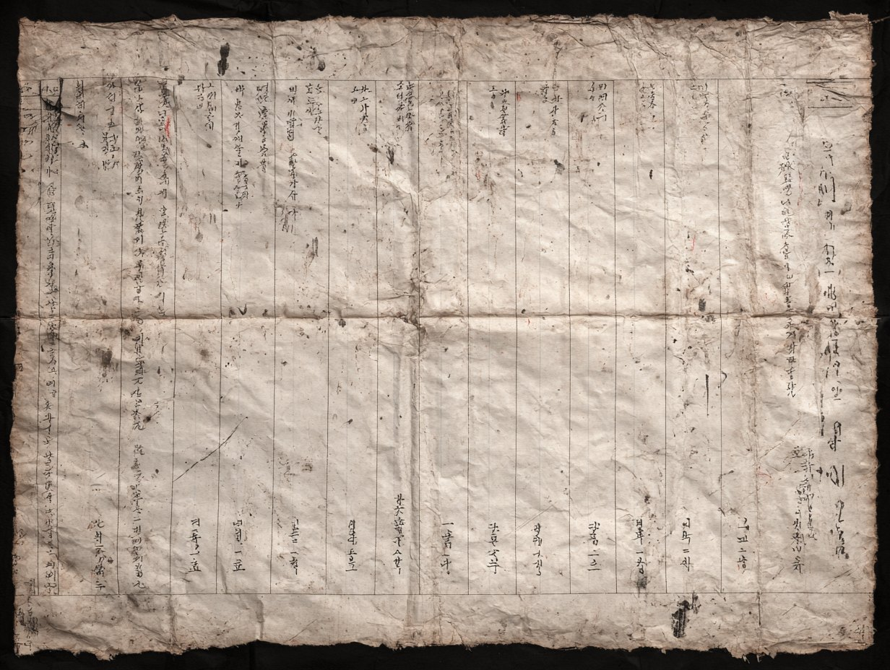
부 고
백도교 교조 전정운 선생께서
대정 팔 년 ○월 ○일
세상을 떠나셧기에
삼가 알리나이다
집안 ○○○ 삼가 올림
다 읽으셧소?종이를 한 번 더 누르시압
쓰엿스나 — 끗내 돌지 아넛소.
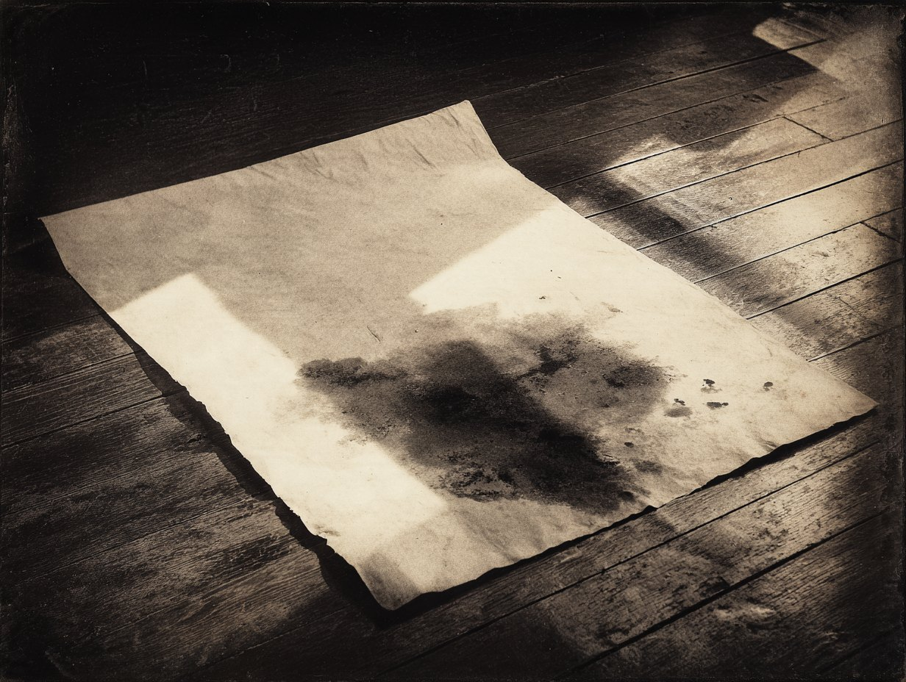
흰 종이를 눌러 들추시압그 아래에 — 쓰다 만 부고가 잇소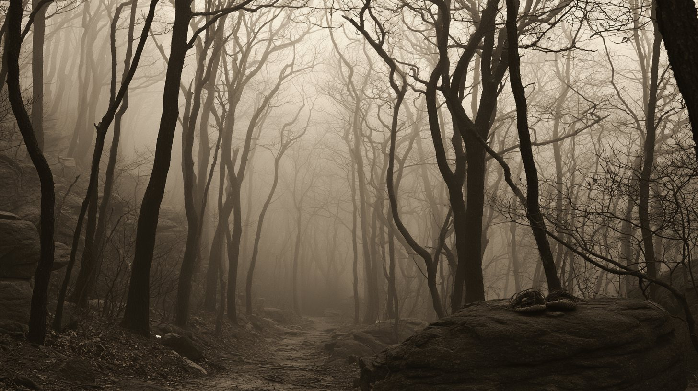
- 1912백도교
전정운이 강원도 김화 오성산에서 백도교를 열엇소. 신도가 일만을 넘엇다 하오.
- 1919숨긴 죽음
교조가 죽엇소. 아들 전용해 등은 알리지 안코 몰래 묻엇소.
- 1920드러남
정성희의 고소로 숨긴 죽음이 드러낫소.
- 그 뒤백백교
갈라진 무리 하나를 전용해가 이끌엇소. 신도들은 그를 「대원님」이라 불럿소.
아버지의 죽음을 덥헛든 그 손이, 뒤에 — 더 만흔 것을 덥헛소.
근거 · 한국민족문화대백과사전 · 위키백과 「백백교」 (백도교 1912 · 교조 사망 은폐 1919 · 정성희 고소 1920) · 부고 문안은 재구성
대원님에게 가는 길은, 장부 한 권을 지나야 하엿소.
헌납 장부
바친 만큼, 「독립이 되는 날」의 벼슬을 약속하엿소. 바칠 것을 하나씩 골라 보시압.
벼슬 사다리 — 바친 만큼 올라가오
- 대신
- 참의
- 도지사
- 군수
- 경찰서장
다섯을 다 바치면 — 맨 우에 한 줄이 더 적히오.
사다리와 짝은 재구성
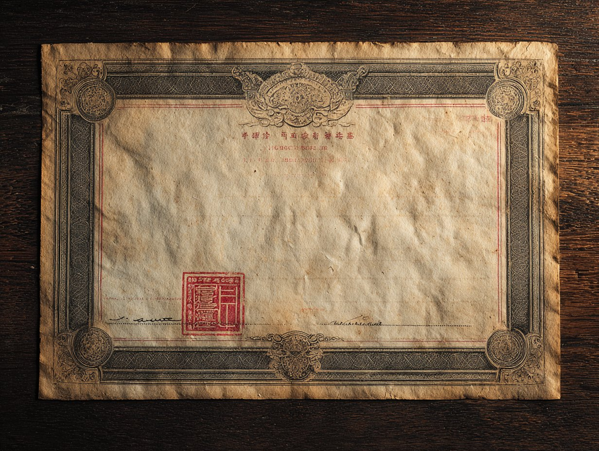
임 명 장
아무개 귀하
바칠 것을 내면,
여긔에 벼슬이 적히오.
대원대원
지인
임명장은, 한 장도 지켜지지 아넛소. 그리고 — 신도들은 딸까지 바쳣소.
근거 · 한국민족문화대백과사전 · 위키백과 「백백교」 (헌납 · 독립 뒤 관직 약속 · 딸 헌납) · 벼슬의 높낮이와 바친 것의 짝, 장부와 임명장의 모양은 재구성
바친 것이 다하면 — 다음은 식구엿소.
흐터진 한 집
한 집 식구를 여러 곳에 나누어 살게 하엿소. 하나가 떠나면 — 남은 식구가 볼모가 되엇소. 직접 해 보시압.
방석 네 장 — 한 집 식구요.
말을 듯지 안는 이, 떠나려는 이, 비밀을 아는 이 — 그들을 맡은 무리가 따로 잇섯소.
식구가 흐터져 잇스니, 누구도 혼자서는 떠날 수 업섯소.
근거 · 한국민족문화대백과사전 · 위키백과 「백백교」 (가족 분산 · 볼모 · 벽력사 · 딸 헌납) · 식구와 지부의 짝은 재구성
소화 십이 년 이월 십륙일 밤. 왕십리의 한 집에, 불이 아즉 켜져 잇섯소.
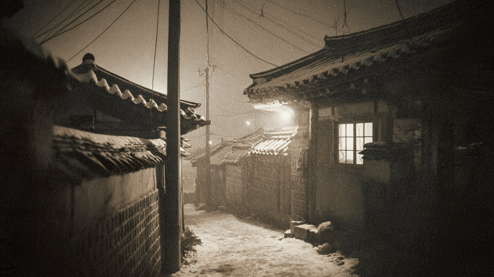
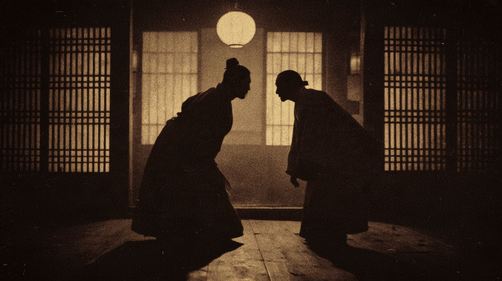
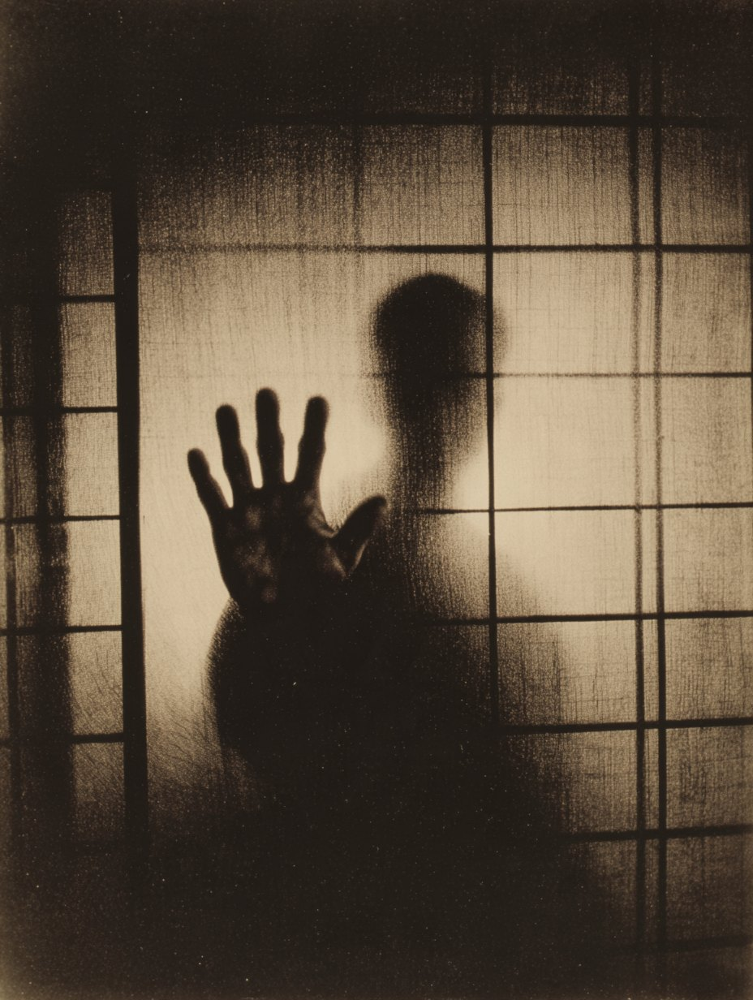
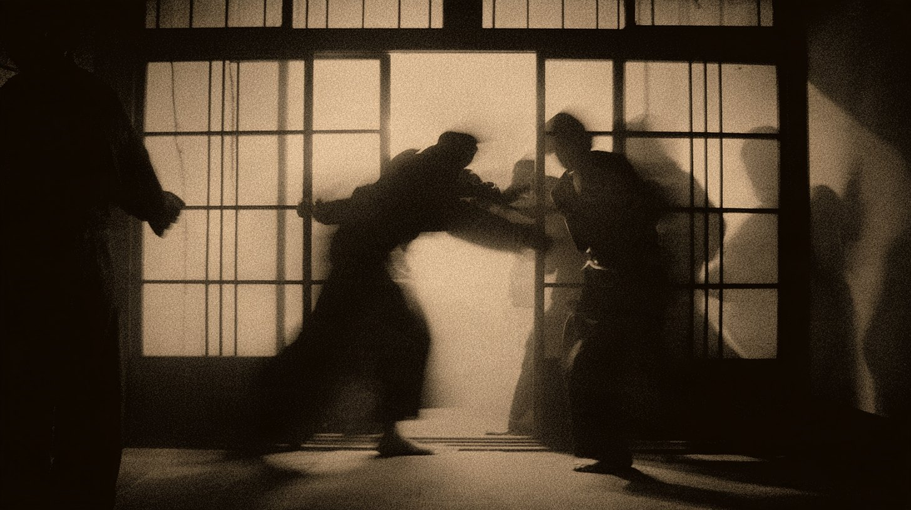
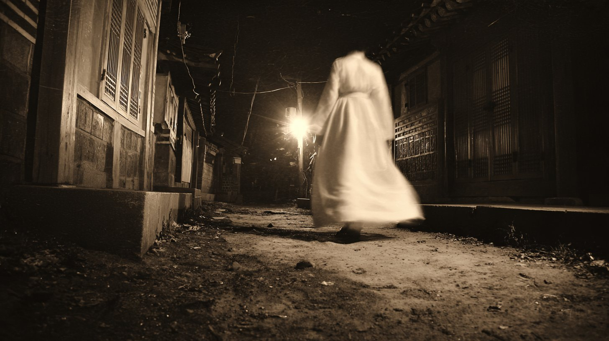
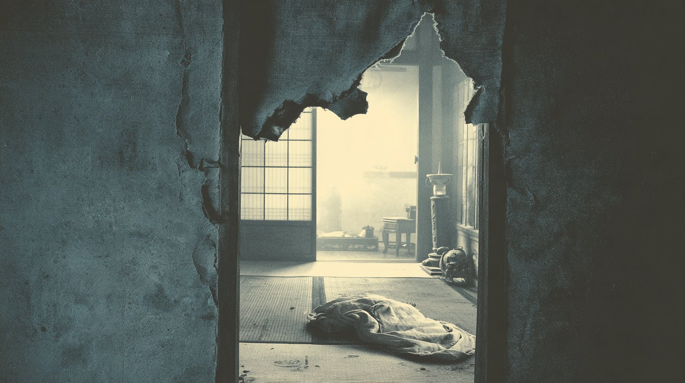
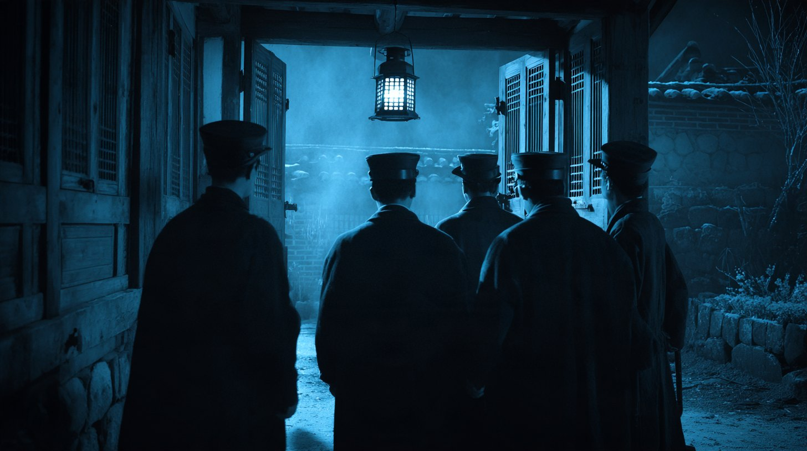
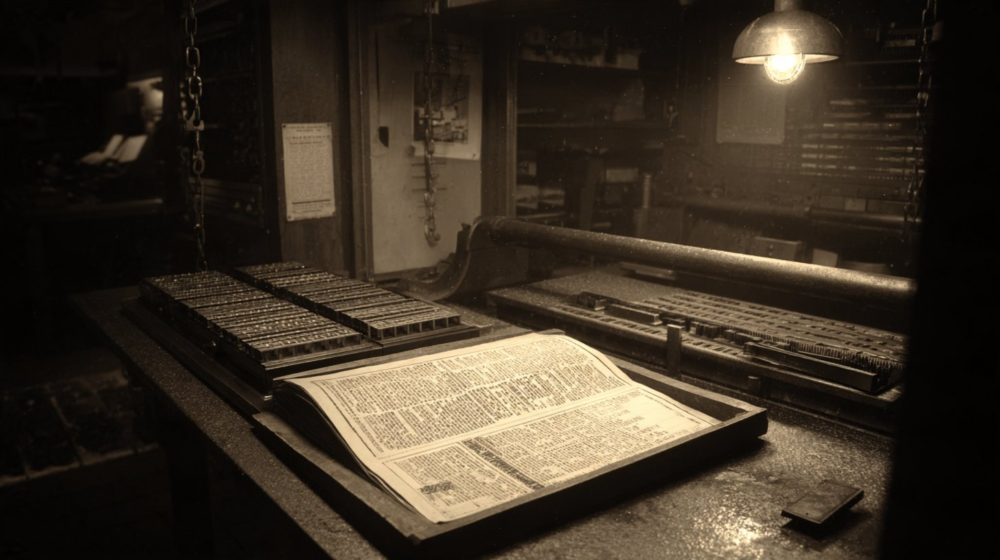
제사장 · 그 밤이월 십륙일 밤 · 왕십리
왕십리의 한 집에, 불이 아즉 켜져 잇섯소.
유곤용의 조부와 부친은 재산을 모다 바첫고, 누이동생은 교주에게 바쳐졋소. 뒤늦게 이를 안 그는 삼만 원을 바치겟다 하고 인삼과 록용을 보내어 — 이 밤, 하왕십리 부친의 집에서 교주를 맛낫소.
그는 틈을 엿보앗소.
복수하려 하엿소. 그러나 수행원들에게 막혓고 — 교주는 그 길로 달아낫소.
그날 밤, 교주는 사라졋소. 경찰이 그를 쫏앗소.
경찰이 인현동의 집을 덥쳣소. 이경득과 이순분이 붓잡혓소. 장부 속의 일이, 그제야 열리기 시작하엿소.
이 일을 신문에 싯는 것이 금지되엇소.
천천히 아래로 내리시압
재현사흘 뒤, 이월 십구일 — 이 일을 신문에 싯는 것이 금지되엇소.
왕십리의 방 · 재현 그림 · 장면의 순서와 연출은 재구성
근거 · 위키백과 「백백교」 (유곤용의 가족 · 헌금을 미끼로 한 만남 · 실패한 복수 · 교주의 도주) · 후대 회고 기사 (3만 원 헌금 약속 · 인삼과 녹용 · 하왕십리) · 팀 자료 (인현동 검거 · 2.19 보도 금지)
제오장 · 말할 수 업든 신문
소화 십이 년 이월 십륙일 — 사월 십삼일
쉰세 날의 침묵
이월 십구일부터 사월 십이일까지, 이 일은 어느 신문에도 실릴 수 업섯소.
그 쉰세 날 동안 — 교주는 이미, 산에 누워 잇섯소.
- 2.16그 밤
- 2.19 – 4.12보도 금지
- 2.21경찰이 본 교주의 죽은 날
- 사월 초용문산에서 발견
- 4.13금지가 풀림
제륙장 · 용문산
얼굴 업는 수배
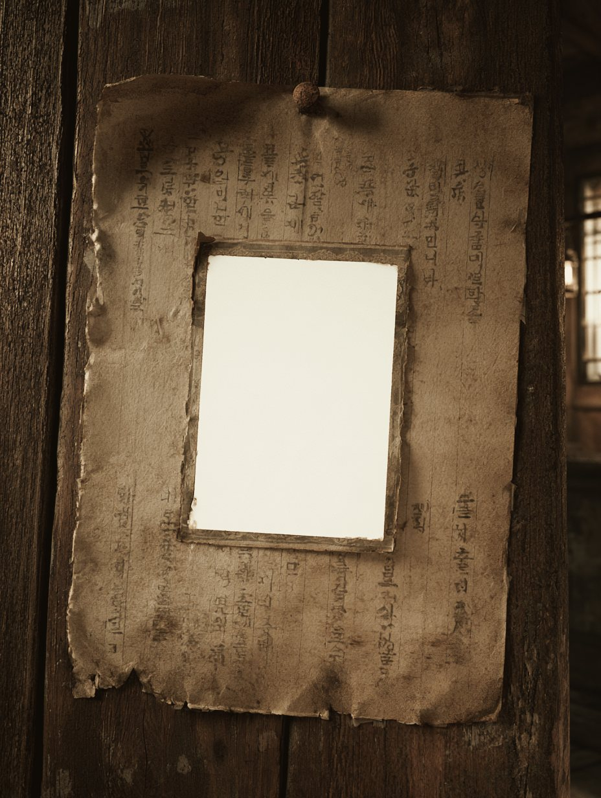
- 이월 십륙일 밤, 교주는 사라졋소. 경찰이 그를 쫏앗소.
- 그가 써 온 일홈만 — 「김두선」 등 열여섯 개엿소.
- 쉰 날 남짓 지난 사월 초, 양평 용문산 기슭에서 그를 차잣소. 이미 숨이 업섯소.
- 경찰은, 그가 이월 이십일일에 스스로 목숨을 끈엇다고 결론지엇소.
- 주머니에 남은 것은 엘진 금시계 하나와 팔십 원. 그를 알아본 것은 — 그의 아들이엇소.
- 그러나 — 얼굴은 알아볼 수 업슬 만큼 상해 잇섯소. 죽은 날을 두고도 의문이 남앗고, 신문에는 「다른 이로 꾸며 달아낫다」는 소문도 실렷소.
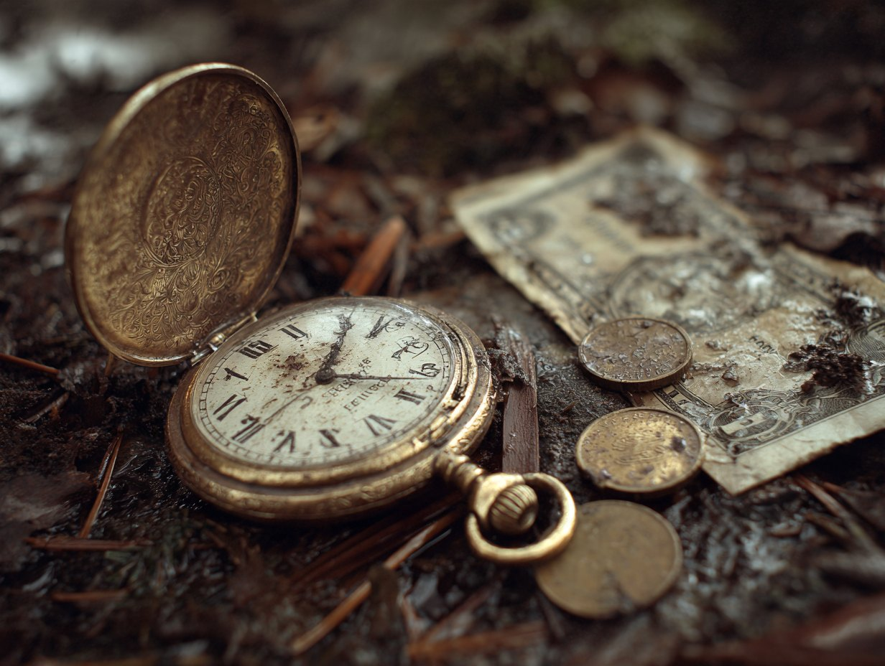
천하를 희게 한다든 이는,
열여섯 개의 일홈 뒤에 숨엇소.
용문산의 숲 · 재현 그림 · 손으로 비추어 보시압
근거 · 위키백과 「백백교」 (가명 16개 · 김두선 · 용문산 · 2.21 자살 결론 · 엘진 금시계와 80원 · 얼굴 훼손 · 사망 시점 의문 · 위장 도주 소문 보도)
사월 십삼일, 금지가 풀렷소. 그날 — 신문은 산을 파는 이야기로 가득 찻소.
땅이 내노은 것
경성 근교에서 황해도, 강원도까지 — 이십여 곳의 산자락에서 주검이 나왓소. 묻힌 자리마다 흰 표지를 하나씩 꼬자 본다면 — 세어 보시압.
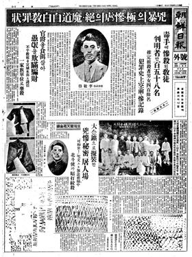
사월 십삼일 · 조선일보 호외
「흉포의 극 · 참학의 절 · 마도 백백교 죄상」
금지가 풀린 날, 처음 세상에 나온 지면이오. 동아일보는 그때 — 손긔졍 사건으로 정간 중이엇소. 손긔졍 사건으로 →
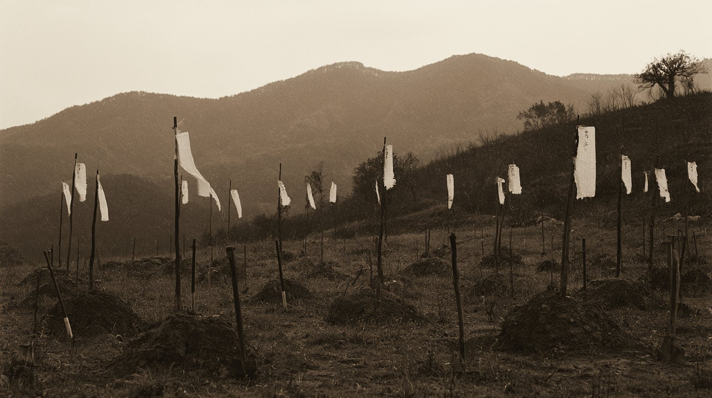
314
아모도 — 끗내 다 세지 못하엿소.
0세엇소
표지 하나가 — 땅이 내노은 한 사람이오. 산비탈을 눌러 세어 보시압
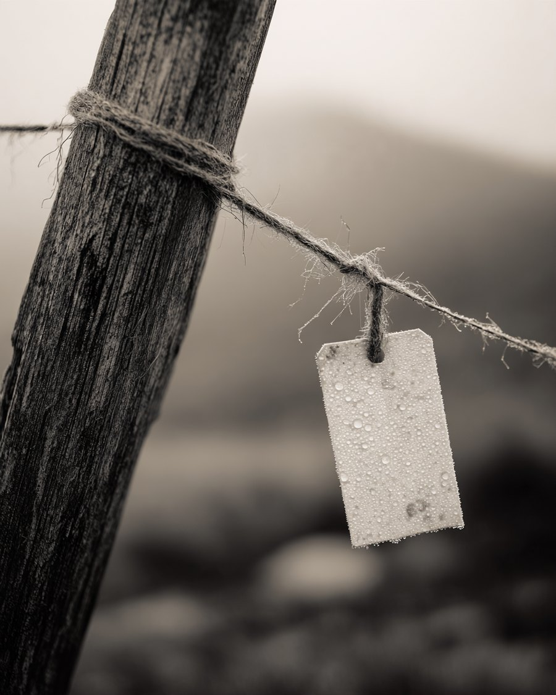
흰 표지를 꼬즌 산비탈 · 재현 그림 · 표지는 묻힌 자리를 나타낸 상징이오 — 실제로 꼬친 것은 아니오
긔록에 남은 수
- 314뒤에 가장 흔히 적히는 수
- 380동아일보 류월 구일자 — 평강·안변 이백륙, 연천 팔십여
- 346동아일보 십일월 십칠일자
- 350여또 다른 긔록
신문마다, 날마다 수가 달랏소.
아모도 — 끗내 다 세지 못하엿소.
근거 · 조선일보 1937.4.13 호외 · 동아일보 1937.6.9 「발굴시체 삼백팔십」 · 1937.11.17 · 위키백과 「백백교」 (314 · 20여 곳 · 마포 · 청량리 · 양평 · 연천 · 사리원 · 세포 · 양주) · 표지를 세는 장치는 재구성
속간한 동아일보는, 그 뒤 반년 동안 백백교를 따라 걸엇소.
지면이 따라간 반년
날자를 넘기며 그해의 지면을 읽으시압. 첫 장은 조선일보 호외, 그 뒤는 류월 삼일에 속간한 동아일보요.
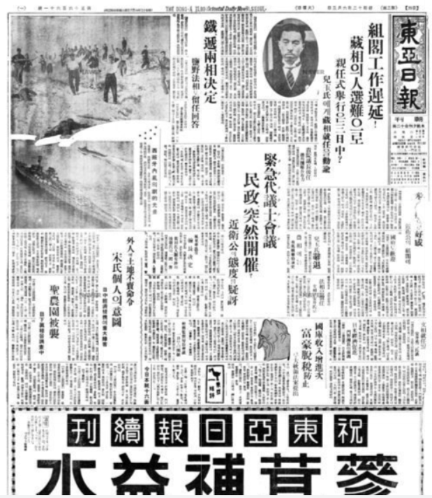
류월 삼일, 동아일보 속간. 아홉 달 남짓 만에 다시 찍힌 1면 아래칸에 「축 동아일보 속간」.
신문이 다 적지 못한 일은 — 삼 년의 조서에 남앗소.
조서가 밝힌 것
신문이 다 적지 못한 것 — 삼 년의 수사와 예심이 조서에 남겻소. 먹줄을 하나씩 거더 읽으시압.
- 첫째딸
재산이 모자란 신도에게는 딸을 바치게 하엿소. 그 가운데 몇은 교주의 첩이 되엇고, 나머지는 간부들에게 넘겨졋소. 재판에는 「외설」의 죄목이 부텃소.
- 둘째벽력사
죽이는 일은 「벽력사」라 불린 광신도들이 맡앗소.
- 셋째죽인 까닭
떠날 것 가튼 이. 비밀이 샐 것 가튼 이. 먹여 살리기 버거운 이. 경찰 눈에 띌 만큼 커진 무리. — 그것이 까닭이엇소.
- 넷째묻은 곳
팔십여 차례에 걸쳐, 삼백오십여 명을 죽여 산에 묻엇다고 전하오. 마포 · 청량리 · 양평 · 연천 · 사리원 · 세포 · 양주 — 이십여 곳의 아지트에서 나왓소.
- 그 뿌리아버지 때부터
일천구백십오 년 무렵, 교조 전정운은 오성산에서 첩 넷을 산 채로 묻엇소. 그 일은 십오 년 뒤에야 드러낫소. 아들은 — 그 길을 더 크게 걸엇소.
구원을 바라고 들어간 곳에서 —
비밀을 알앗다는 까닭 하나로, 죽을 수 잇섯소.
근거 · 위키백과 「백백교」 (딸 헌납 · 첩 · 간부 · 벽력사 · 살해 대상 · 80여 차례 350여 명 · 20여 곳 · 금화 사건 1915 생매장 · 1930 발각 · 외설 등 10개 죄목) · 딸의 그림자는 재구성 · 한국민족문화대백과사전 「백백교」 (314명 살해 혐의 기소) · 경성일보 1937.4.13 호외 · 동아일보 1937 (살인사교의 참혈사 · 시체 발굴 탐험대) · 재판 기사 스크랩
교주는 업섯소. 남은 이들이 — 법정에 섯소.
스물다섯 자리
수사 삼백일 일. 살인 · 사체유긔 · 사긔 · 공갈 — 열 가지 죄목. 그러나 맨 압 자리는 — 비어 잇섯소.
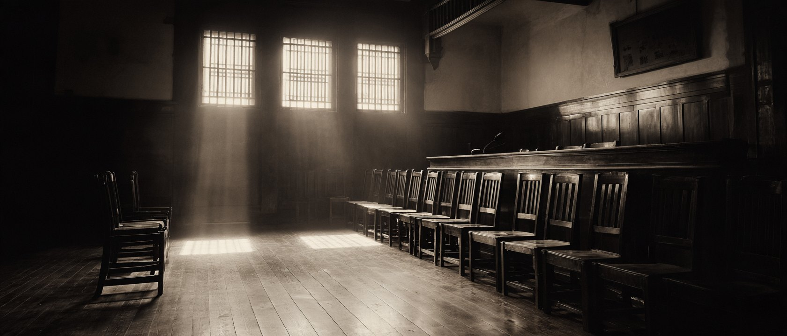
- 사형
- 사형
- 사형
- 사형
- 사형
- 사형
- 사형
- 사형
- 사형
- 사형
- 사형
- 사형
- 무긔
- 무긔
25긔소
18사형 구형
12사형 선고
2무긔징역
나머지는 징역. 검사는 무긔 이하 여섯에 대해 다시 다투겟다 하엿소.
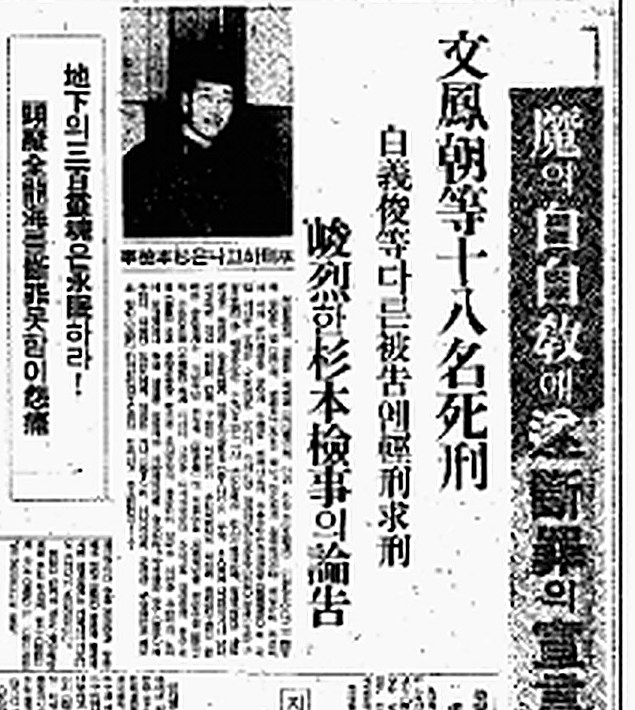
「지하의 삼백 령혼은 영면하라!
구형을 알린 그날 지면의 한 줄
두마 전용해를 단죄 못함이 원통」
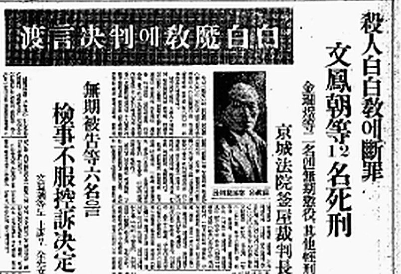
그 사형이 실제로 집행되엇는지는 — 긔록이 차자지지 아넛다는 말도 잇소.
근거 · 동아일보 1940년 3월 (구형 — 18명 사형 구형 · 판결 — 12명 사형 · 2명 무기 · 검사 항소) · 한국민족문화대백과사전 「백백교」 (12명 사형) · 위키백과 「백백교」 (기소 25 · 10개 죄목 · 사형 14로 적음) · 동아일보 1937.12.11 (수사 301일)
그런데 — 그 혼자만은, 땅에 묻히지 아넛소.
선반 우의 병
그는 땅에 묻히지 아넛소. 칠십사 년 동안 — 병 속에 잇섯소.
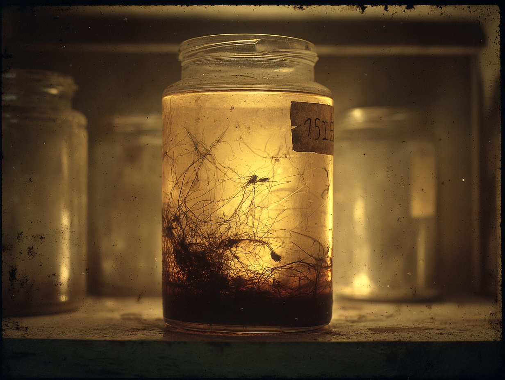
1937년
0 년째, 병 속에
- 1937소화 십이 년
일본 경찰은 그의 머리를 잘라 포르말린 병에 너헛소.
- 1945해방
나라가 바뀌엇소. 병은 그대로 남앗소.
- 1950전쟁
전쟁이 지나갓소. 병은 그대로 남앗소.
- 그 뒤국과수
병은 국립과학수사연구원의 선반 우에 노혀 잇섯소.
- 훗날진정
「사람의 몸을 표본으로 두는 것은 비인도적」이라는 진정을 행정안전부가 바다들엿소.
- 2011시월 이십오일
불교단체가 병을 넘겨바다, 서울시립승화원에서 화장하엿소. 이틀 뒤 남양주 봉선사에서 위령제가 열렷소.
천천히 아래로 — 칠십사 년이 흐르오
병이 비워지고 — 그는 재가 되엇소.
근거 · 위키백과 「백백교」 (머리 표본 · 국과수 보관 · 행정안전부 진정 · 2011.10.25 서울시립승화원 화장 · 10.27 봉선사 위령제)
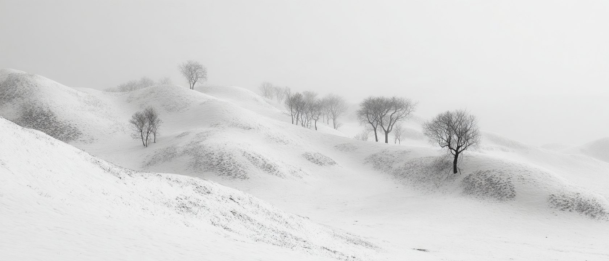
소화 십이 년 · 왕십리에서 용문산까지
- 그들은 흰 것을 미덧소.
- 한 사람의 흰 것으로, 천하를 희게 하자 하엿소.
- 흰 옷 아래에는 장부가 잇섯고, 임명장이 잇섯고 —
- 이십여 곳의 산이 잇섯소.
가장 흰 것이,
가장 만히 덥고 잇섯소.
덥힌 것을 다 세지 못한 채로 — 지금도.
경성의 밤은 아즉 길소.
그리고 — 흰 것을 내세운 무리는, 그 뒤에도 일홈을 바꾸어 나타낫소.
흰 옷은 벗엇어도
라듸오를 켜고 다이알을 돌리시압. 소화 십이 년의 그 장부에서, 다른 닫힌 무리들이 잡히오.
일홈은 달랏고,
장부는 비슷하엿소.
닫힌 문 안의 일은, 늘 늣게 들리오.
당시 지면 (신문 아카이브)
- 조선일보 사월 십삼일 호외흉포의 극 · 마도 백백교 죄상 — 보도 금지 해제
- 동아일보 류월 삼일자속간호
- 동아일보 류월 구일자발굴시체 삼백팔십
- 동아일보 구월 이십삼일자삼십 명 송국 예정
- 동아일보 시월 십칠일자십 개월 만에 취조 단락
- 동아일보 십일월 십칠일자끝없는 「지옥」 — 346명
- 동아일보 십이월 십일일자301일 만에 송국
그 밧긔 자료
- 한국민족문화대백과사전 「백백교」 — 계보 · 교리 · 관직 약속 · 판결
- 위키백과 「백백교」 — 1937.2.16 · 보도 금지(2.19~4.12) · 피해 규모 · 가명 16개 · 용문산
- 위키백과 「백백교」 — 머리 표본 · 2010 진정 · 2011.10.25 화장 · 10.27 봉선사 위령제
- 한국민족문화대백과사전 「일장기 말소 사건」 — 동아일보 정간과 속간
- 팀 라디오 원고 (1962 · 1987 · 1990년대 · 1996)
- 재현 그림 — 재현(AI 생성), 그림마다 '재현' 표기
이 긔사가 지킨 것
- 화를 당한 이들의 일홈과 얼굴은 싯지 아넛소
- 주검과 피는 그리지 아넛소
- 첫 보도는 조선일보 호외라 바로 적엇소
- 수가 엇갈리는 곳은 엇갈리는 대로 적엇소
- 재현 그림은 그림마다 '재현'이라 밝혓소